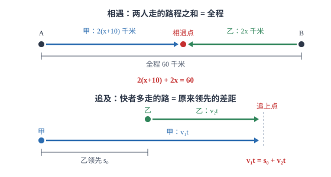

列方程（组）解应用题
应用题的难点从来不是解方程，而是把题目里的那句话翻译成等式；设对未知数，等量关系往往自己浮出来。
| 所属主题 | 方程与不等式 |
|---|---|
| 所属模块 | 代数 |
| 课标学段 | 第四学段（7~9 年级） |
| 前置知识 | 一元一次方程、二元一次方程组、一元二次方程 |
| 核心素养 | 模型观念应用意识运算能力 |
教材定位
人民教育出版社《人教版（2024版）义务教育教科书·数学》
七年级上册第5章 一元一次方程5.3 实际问题与一元一次方程
方法源自七上 5.3「实际问题与一元一次方程」。本篇把「找等量关系、设未知数」的同一套方法扩展到二元一次方程组（七下 10.3）与一元二次方程（九上 25.3）的应用题。
说明
列方程解应用题，是把一段中文描述翻译成数学语言的过程。翻译的核心是找等量关系——题目里总有一句话表示「两个量相等」，例如「两人的路程相同」「两种方案的费用一样」「甲的数量是乙的 2 倍」「合作若干天恰好完成」。找到这句话，把它两边的量分别用含未知数的式子表示，方程就出来了。
常见类型有六类，每类都有自己的等量关系模板。和差倍分问题：两个量的和、差、倍数关系。行程问题：路程 = 速度 × 时间，相遇时两人路程之和等于总距离，追及时两人路程之差等于初始距离。工程问题：工作量 = 效率 × 时间，总工作量常设为 1。销售问题：利润 = 售价 - 进价，利润率 = 利润 ÷ 进价。配套问题：两种零件的数量比等于配套比。数字问题：两位数写成 10a+b。
使用场景
当题目描述两个对象在同一段时间内的运动、并且给出距离与时间的关系时，用行程模型。审题时先画一条线段图标出出发点与方向：相向而行用「路程和」，同向追及用「路程差」，环形跑道同向用「多跑一圈」。把方向判断清楚，等量关系就不会写反。
当题目描述购买、销售、打折、利润时，用销售模型。这类题最容易错在「打折是在标价的基础上算」还是「在进价的基础上算」，以及「利润率的分母是进价」。审题时把标价、售价、进价、利润四个量列成一张小表，逐个填数，等量关系自然清楚。工程、配套、数字问题同理，各自先把关键量列成表或图，再写等式。
注意点
单位必须统一。行程题里速度常用「千米/时」，而时间可能给的是「分钟」，两者混用会得到一个荒谬的答案。工程题里「几天」与「几小时」也不能混。列方程前先把所有量换算成同一套单位，并在设未知数时写清单位。
设未知数要「设得让式子简单」。求什么就设什么是常规做法，但有时设「中间量」会更省事：三个连续整数的问题设中间一个为 x；行程问题里有多个时间点时，设速度往往比设时间简单。设完之后要用一句话说明每个含 x 的式子代表什么，否则列方程时容易张冠李戴。
证明
证明
结论 1「某数的 3 倍减去 5 等于 16」可翻译成方程 3x-5=16，解得 x=7。
先看一个最小的例子：某数的 3 倍减去 5 等于 16，求这个数。设这个数为 x，把中文逐段翻译：「某数的 3 倍」是 3x，「减去 5」是 3x-5，「等于 16」给出等号，于是 3x-5=16，解得 x=7。
关键一步依据是「把文字逐段翻译成算式」：中文里的每个运算词对应一个运算符号，「某数的 3 倍」写成 3x、「减去 5」写成 3x-5、「等于 16」写成等号与右边 16。翻译无误后，剩下的就是熟悉的一元一次方程。
结论 2给未知量起名字（设 x）是列方程的关键动作，它让未知数能像已知数一样参与运算。
这个过程中真正的关键动作是「给未知量起名字」。一旦把要求的数记作 x，它就能像已知数一样参与运算、写进等式——这正是符号代数的力量。算术解法要求每一步都算出具体数值，方程解法允许「先带着未知数算，最后才求值」，思路的负担因此大大减轻。
关键一步依据是字母表示数的约定：x 是一个待定的数，与已知数一样能参与加、减、乘、除并写进等式。正因为它可以先不求值，思路才能从「每步都要算出具体数」变成「先列关系再求值」，这是方程解法比算术解法省力的根本原因。
结论 3方程是由题目里那句相等关系翻译出来的，所以翻译没错时方程的解就满足题意，解完必须检验。
为什么方程一定可解：方程是由「题目里那句相等关系」翻译出来的，只要翻译没出错，方程的解就是满足题意的值。这也解释了为什么解完必须检验：检验是回到原题，看这个值是否让题目里所有的描述都成立，而不只是让方程两边相等。
关键一步依据是方程与题意的等价关系：方程两边的相等正是题目中那句相等关系，翻译正确就保证解满足这一条。但题目往往还含有范围、整数等限制，所以检验要回到原题的全部描述，而不只是让等式成立。
结论 4列方程需要两种能力：把中文按运算符号拆开翻译，以及判断哪个量最适合设为未知数。
所以列方程的能力，本质是两种能力：一是把中文按运算符号拆开的能力（翻译），二是判断哪个量最适合设为未知数的能力（建模）。前者靠逐句拆解练习，后者靠比较不同设法带来的式子复杂度。
关键一步依据是翻译之后还要建模：设不同的未知数会得到不同复杂度的式子，选那个使关系最直接、系数最简单的设法；比较不同设法所得式子的复杂度，就是检验建模是否恰当的标准。
动手实验
用一张纸做「翻译练习」：把「甲比乙每小时多走 10 千米」逐段标注——「乙每小时走 x 千米」写下来，「甲」写成 x+10，再补一句「甲 2 小时走 2(x+10) 千米」。接着把题目剩下的条件也这样逐段写出来，最后剩下的那句「两人 2 小时共走 60 千米」自然成为等式 2(x+10)+2x=60。整个过程不靠灵感，只靠逐段替换。
解题思路
解应用题走五步：审题（找出等量关系，用笔划出那句关键话）、设未知数（写清单位与含义）、列方程（把等量关系两边的量分别用含未知数的式子表示）、解方程、检验并作答。五步里最容易被压缩的是第一步和第五步，而失分大多出在这两步。
检验要查三件事：这个值是不是方程的解（代回方程）；是否符合实际意义（速度为正、人数为整数、天数合理）；是否满足题目里除了等量关系之外的其他条件（例如「两种都要买」「不超过若干元」）。三件事都通过，才能写答案。
遇到多个未知量时，先判断能不能用一个未知数表示全部。若题中存在明显的倍数或差关系，用一个未知数加表达式就够了；若两个量之间没有直接关系、各自独立给条件，就设两个未知数列方程组。判断标准是「条件个数与未知数个数是否匹配」，条件多余时还可以用来检验。
按场景的例题
例 1（场景：行程与速度） 两人相向骑行相遇
A、B 两地相距 60 千米。甲、乙两人分别从两地同时出发相向而行，2 小时后相遇。已知甲每小时比乙多走 10 千米，求两人的速度。
解：设乙的速度为 x 千米/时，则甲为 (x+10) 千米/时。等量关系是「两人 2 小时走的路程之和等于 60 千米」（线段图见图 1）：2(x+10)+2x=60。展开得 2x+20+2x=60，即 4x=40，x=10。检验：乙 10 千米/时、甲 20 千米/时，2 小时共走 20+40=60 千米，且甲比乙每小时多 10 千米，两个条件都满足。
答：甲的速度是 20 千米/时，乙的速度是 10 千米/时。

图 1：线段图把「路程之和等于全程」「路程之差等于领先差距」画出来，等量关系一眼可见
例 2（场景：销售与利润） 打折销售中的定价
某商品进价 180 元，按定价的九折出售，仍可获得 25% 的利润。求这件商品的定价。
解：设定价为 x 元。售价是 0.9x，利润是 0.9x-180，利润率为 0.9x-180/180。由「利润率为 25%」得 0.9x-180/180=0.25，两边乘 180 得 0.9x-180=45，即 0.9x=225，x=250。检验：售价 250× 0.9=225 元，利润 45 元，占进价的 45/180=25%，符合。
答：定价是 250 元。
例 3（场景：测量与工程） 两队先后进场完成工程
一项工程，甲队单独做 12 天完成，乙队单独做 24 天完成。甲队先做 3 天后，乙队加入，两队合作完成剩下的部分。乙队加入后还需要多少天？
解：把总工程量看作 1，甲每天完成 1/12、乙每天完成 1/24。设乙队加入后还需要 x 天，则甲一共做了 (3+x) 天、乙做了 x 天。由「两人完成的总量为 1」列方程：3+x/12+x/24=1。两边乘 24：2(3+x)+x=24，即 6+2x+x=24，3x=18，x=6。检验：甲做 9 天完成 9/12=3/4，乙做 6 天完成 6/24=1/4，合计 1，符合。
答：乙队加入后还需要 6 天，整个工程共用 9 天。
常用推论
行程问题有三条常用等量关系：相向而行时「甲的路程 + 乙的路程 = 两地距离」；同向追及时「追者路程 - 被追者路程 = 初始距离」；环形跑道同向出发时「快者路程 - 慢者路程 = 一圈长度」。判断用哪一条，只看两人是「面对面」还是「同方向」。
工程问题中，若甲单独做需 a 天、乙单独做需 b 天，则合作完成需要的天数是 ab/a+b。这个式子由 1/a+1/b=1/t 解出，记住它可以在选择题里省时间。
两位数写成 10a+b（a 是十位数字、b 是个位数字），把十位与个位对调后的数是 10b+a。两个数的差是 9(a-b)，这个式子能解释「数字对调后的差总能被 9 整除」这条常见结论。
易错点
错行程题中速度用「千米/时」，时间直接代入「分钟」，算出速度是 0.5 千米/时。
为什么错单位没有统一。速度与时间的单位必须配套，分钟要先换算成小时（除以 60）才能与「千米/时」相乘。
正确先把 40 分钟写成 2/3 小时，再代入公式。设未知数时就在旁边标注单位，可以避免这类错误。
错工程题中把「甲先做 3 天，之后两队合作 x 天」写成甲只做了 x 天。
为什么错漏掉了甲前面单独做的那段工作时间。甲的总工作时间是 3+x 天，乙才是 x 天。
正确分别写清每个人参与的总时间：甲 (3+x) 天、乙 x 天，再按各自的效率乘时间。审题时用时间轴标出各人的进场与退场时刻，最不容易漏。
错解出 x=12.5 人后，直接把答案写成「12.5 人」。
为什么错人数、本数这类量必须是整数，方程的解虽然数学上成立，但不符合实际意义。
正确按题意取整并向符合条件的方向调整：若问「最多几人」则取 12，问「至少几人」则取 13，并回代验证取整后的值是否仍满足所有条件。
直观理解
应用题像一段被压缩过的文字：题目只给了几个数字和几句关系，其余都被省略了。列方程就是把它「解压」——给每个未知量起个名字，把省略的关系一条条写出来，最后剩下的那句「两者相等」就是方程。名字起得好（设得巧），解压后的文字就短；名字起得别扭，式子会变得又长又乱。所以做题时的第一分钟不要急着算，先想「设哪个量为 x 最省事」。